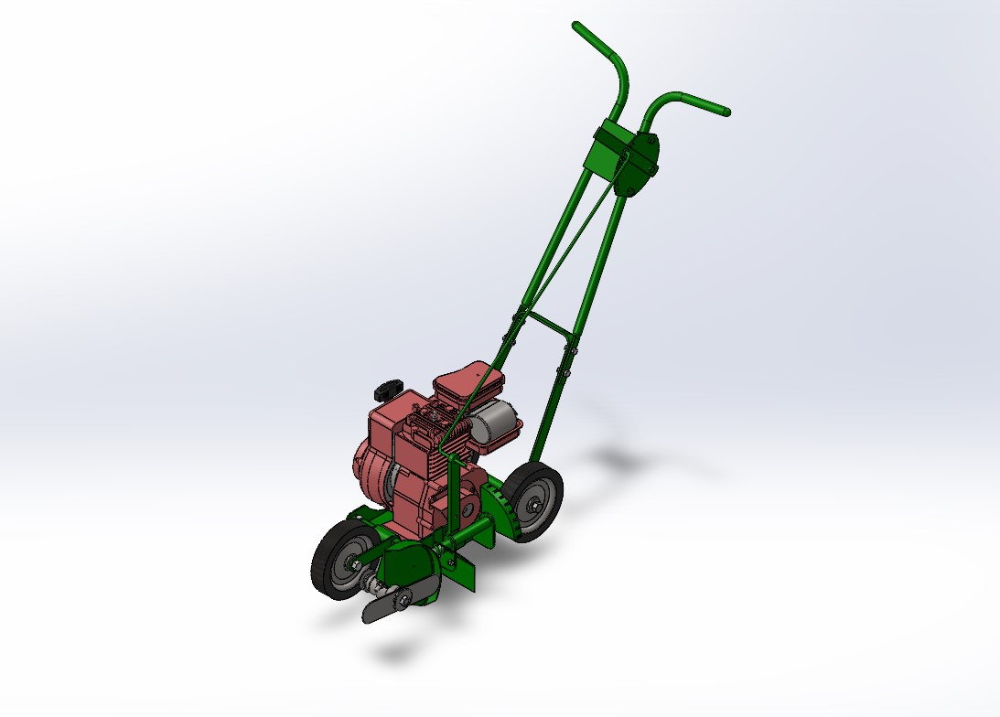

About Me
I’m a Mechanical Engineering student at Cal Poly Pomona with a passion for hands-on problem solving, CAD design, and mechanical systems. I'm currently seeking internship opportunities to apply my technical skills and continue growing through real-world engineering experience.
Projects
Lawn Edger Reverse Engineering
Date: December 2024
Collaborated with a team of 8 to reverse-engineer a Briggs & Stratton combustion-powered lawn edger. Led disassembly, created detailed SolidWorks assemblies, and produced manufacturing drawings using GD&T. Managed project coordination and adapted to shifting deadlines under pressure.
Resume
Download my resume here.
Contact
Email: ikebray0406@gmail.com
Phone: (909) 368-7672